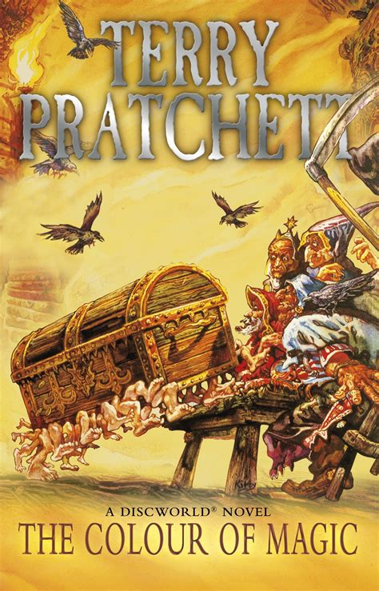
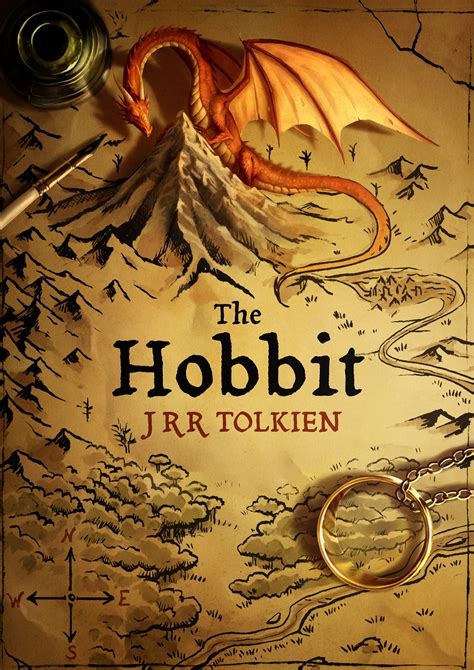

Reviews and Recommendations
The Colour of Magic - Terry Pratchett
Sardonic fantasy at it's very best. The first book of the late great Terry Pratchett's famous Discworld series and a fantastic first dive into a magical world full brilliantly disfunctional characters and charmingly accurate parodies.
The Hobbit - J.R.R Tolkien
One of the most beloved tales of modern literature, it has lighted the imaginations of readers of all ages for decades. It's continued popularity is a testament to the genius of J.R.R Tolkien and his ability to paint a place in your mind so vivid, you sometimes forget it isn't real.
The Dreaming Void - Peter F Hamilton
A gloriously ambitious space opera that never takes it's foot of the pedal from start to finish. For such a high concept science fiction novel it is also remarkably readable, add to this an incredible cast of lovable and deliciously hatable characters this is a no-brainer for anyone even remotely interested in the genre.